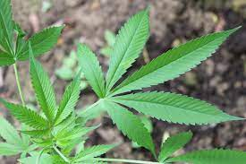
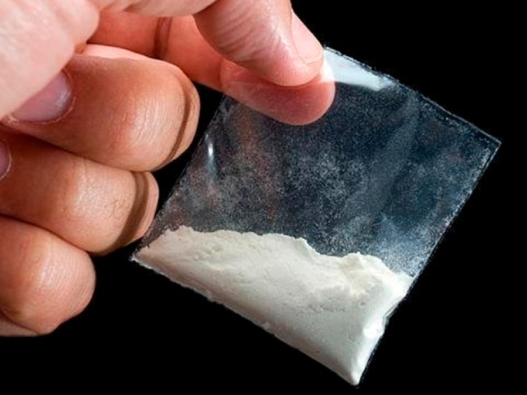

MyDrugs
A loja Especializada em todos os tipos de drogas


Tipos de Verdinho
INDICA: Uso Noturno, Relaxamento e Reflexão
A indica é normalmente comparada à sativa como uma irmã gêmea de personalidade bem diferente. Ao contrário da primeira espécie, é natural de regiões com clima ameno, e necessita de menos luz solar. Também cresce menos, algo em torno de 1 m, e leva menos tempo para atingir a total maturidade. Por essas e outras características, é muito visada para o cultivo indoor.
HÍBRIDAS: O Melhor dos Dois Mundos
Como o nome diz, as variedades híbridas são misturas dos dois principais tipos de Cannabis, indica e sativa. Por isso, conseguem conciliar os efeitos de ambas, apresentando níveis de CBD e THC equilibrados de acordo com a intenção da hibridização.
Existem híbridas produzidas para otimizar o cultivo, unindo pontos positivos na morfologia e apresentação de cada uma das espécies. É possível, portanto, desenvolver uma planta mais resistente a altas temperaturas, por exemplo, ou melhorar sua resposta a pragas e doenças.
RUDERALIS: Matéria-Prima Tradicional
Aposto que muitos conhecedores da maconha não sabiam da existência dessa variedade da sativa, muito cultivada e utilizada ao redor do mundo.
A Cannabis ruderalis tem níveis muito baixos de THC e CDB, então não dá brisa e não possui grandes efeitos medicinais. Seu nome é derivado de uma palavra alemã que significa algo como “erva daninha”, porque é muito comum na beira das estradas na região central da Ásia.
Ela floresce mais cedo que os outros tipos de erva, e justamente por isso é muito procurada para gerar sementes autoflorescentes. Além disso, é da ruderalis que se extrai o que conhecemos como cânhamo, uma fibra usada para diversas coisas, como extração de combustível, confecção de tecidos, papel ecológico e leite vegetal.
Tipos de Pó
O crack é uma variação da cocaína que pode ser fumada. É produzido da cocaína, água e do bicarbonato de sódio ou amônia. É geralmente queimado em cachimbos, mas pode ser também misturado com maconha ou tabaco. Provoca efeitos muito rápidos após a inalação.
OXI
O óxi ou oxidado é uma droga que inicialmente era produzida e consumida na Bolívia e no Peru. No ano de 2005, segundo registros, ela chegou ao Brasil, no estado do Acre, por meio de suas fronteiras. No entanto, há especulações de que ela é usada nesse Estado desde a década de 1980. O oxi é uma mistura da pasta base de cocaína, fabricada a partir das folhas de coca, com substâncias químicas de fácil acesso, como querosene, gasolina, cal virgem ou solvente usado em construções.
Tipos de Balinhas
Ecstasy
é considerado uma droga recreativa e conta com metilenodioximetanfetamina como princípio ativo. Esse ativo tem o poder de aumentar o estado de euforia, além de trazer sensação de prazer e felicidade ao usuário.
LSD
O LSD (dietilamida do ácido lisérgico), conhecido também como “doce” ou “ácido”, é uma substância sintética pertencente ao grupo dos alucinógenos, isto é, uma droga produzida em laboratório capaz de alterar as percepções, os pensamentos e os sentimentos de quem a utiliza.
Caso tenha Interesse, clique no botão "comprar".